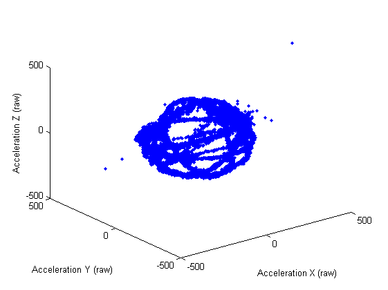
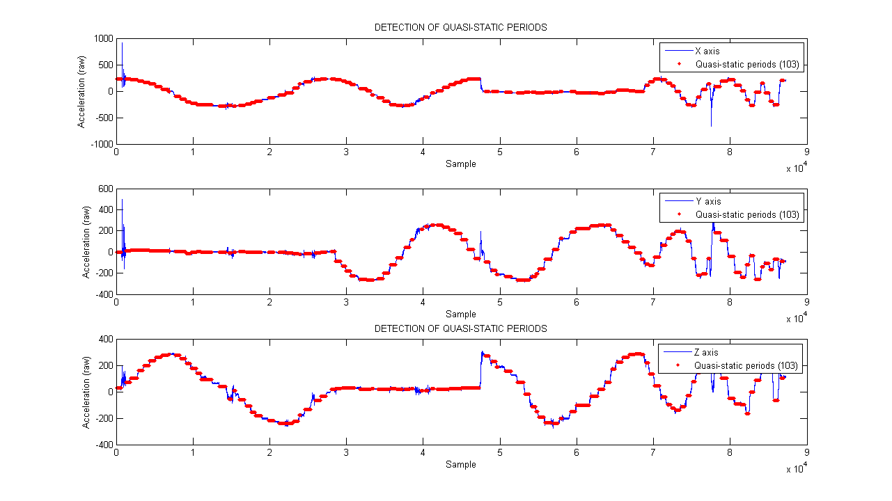
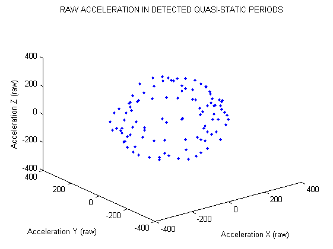
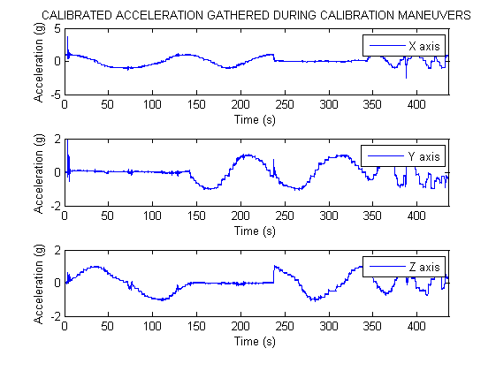
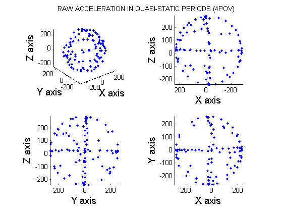
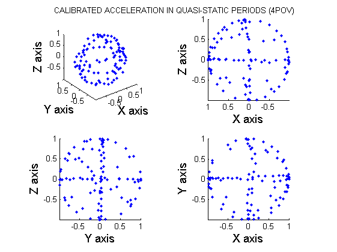

ACCELEROMETER CALIBRATION
The following script carries out the computation of the calibration parameters of the triaxial accelerometer which is included inside the Gaitwatch's trunk unit. We will use an ellipsoid fitting algorithm based the one proposed by Camps et al. (F. Camps, S. Harasse, and A. Monin. Numerical calibration for 3-axis accelerometers and magnetometers. In IEEE International Conference on Electro/Information Technology, 2009. EIT ’09, pages 217–221. IEEE, June 2009.). They present a theoretical and experimental steps of a method to compute gains, bias and non orthogonality factors of magnetometer and accelerometer sensors. The calibration procedure involves setting the accelerometer in multiple quasi-static positions. For more information about this algorithm check Gaitwatch's user manual.
Contents
- Authors : Alberto Olivares and Kai Bötzel.
- Entities : Universidad de Granada & Ludwig-Maximilians Universität München.
- Version : 1.1.
- Last modification : 26/11/2013.
0) General and initial configuration.
Load GaitWatch's functions library.
gw = gwLibrary;
Define the magnitude measure by the sensor (acceleration in this case).
magnitude = 'a';
Define the position of the sensor.
position = 'center';
Define the body sement in which the sensor is placed.
segment = 'trunk';
Load GaitWatch's data structure.
load data/gWDataStruct.mat
Define the flag which controls if the figures are to be shown and stored or just stored
showPlot = 'yes';
1) Load raw calibration data and extract header information.
The first step is to load the raw accelerometer data which was gathered during the calibration maneuvers. The user can select between loading the data directly from GaitWatch or loading it from the hard drive.
S = {'Load data from GaitWatch','Load data from hard drive'};
Selection = listdlg('ListString',S,'Name',...
'Select the origin of the data','ListSize',[250 100],'SelectionMode',...
'single');

switch Selection
Load data from GaitWatch.
case 1
GW_comm;
data_path = 'data/calibration/accelerometer/trunk_rawCalAccData.mat';
save(data_path,'data','FileHeader');
Load data from the hard drive.
case 2
load data/calibration/accelerometer/trunk_rawCalAccData end
And then, we extract some of the information contained in the header.
[f, cal_date, cal_start_time, cal_end_time] = gw.getFHinfo(FileHeader);
2) Extract and plot raw data.
We now extract the data for each one of the axes.
sensor_axis = 'X'; channel = gw.getDataChannel(data_struct,magnitude, sensor_axis,... position, segment); ax = double(data(:,channel)); sensor_axis = 'Y'; channel = gw.getDataChannel(data_struct,magnitude, sensor_axis,... position, segment); ay = double(data(:,channel)); sensor_axis = 'Z'; channel = gw.getDataChannel(data_struct,magnitude, sensor_axis,... position, segment); az = double(data(:,channel));
Computation of the time signal based on the sampling frequency.
time=zeros(1,length(ax)); for i=1:length(ax)-1 time(i+1)=time(i)+1/f; end
To finish this section we plot the 3D representation of the gathered raw acceleration.
if strcmpi(showPlot,'yes') figure plot3(ax,ay,az,'.') xlabel('Acceleration X (raw)') ylabel('Acceleration Y (raw)') zlabel('Acceleration Z (raw)') axis([-500 500 -500 500 -500 500]) saveas(gcf,'figures/calibration/accelerometer/trunk_rawAcc3D.fig') end
3) Compute the average value for each one of the static positions.
As it is explained in GaitWatch's user manual, the maneuvers to gather raw acceleration calibration data require placing the accelerometer in multiple random quasi-static positions. Since the transitions from one quasi-static position to another include linear acceleration, we need to apply an algorithm which extracts only the data from the quasi-static periods and discards data from transitions. Therefore, we need to specify the minimum duration of a quasi-static period, the maximum permited deviation of the data during such a period, and the minimum distance between consecutive quasi-static positions so they are considered to be different.
Set minimum length of quasi-static periods (in samples).
min_len_period = 200;
Set maximum permited deviation of the data during a quasi-static period.
max_sta_dev = 30;
Set minimum distance between consecutive periods so they are considered to be different.
min_interval_dev = 30;
Call the routine to detect all the quasi-static periods given the control parameters above.
[detectados, xo, yo, zo] = gw.selectStaticPositions3D(ax, ay, az,min_len_period, max_sta_dev, min_interval_dev, showPlot);
Plot the acceleration value for each one of the detected periods (in 3D).
if strcmpi(showPlot,'yes') figure plot3(xo,yo,zo,'.') axis([-400 400 -400 400 -400 400]) xlabel('Acceleration X (raw)') ylabel('Acceleration Y (raw)') zlabel('Acceleration Z (raw)') title('RAW ACCELERATION IN DETECTED QUASI-STATIC PERIODS') saveas(gcf,'figures/calibration/accelerometer/trunk_rawStat_Acc3D.fig') end
4) Compute and store the calibration parameters.
Now the calibration parameters will be computed.
We first need to define the sensor which will be calibrated and define the reference value. For the accelerometer, the reference value is the magnitude of the Earth's gravitational field (1g).
ref_val = 1;
sensor = 'acc';
We then call the routine which returns 'alpha' and 'beta' which are the scale factor and non-orghotonality matrix and the bias vector respectively .
[alpha, beta] = gw.comp_acc_mag_cal_params(sensor, ax, ay, az, ref_val);
Warning: Length of lower bounds is < length(x); filling in missing lower bounds with -Inf. Warning: Length of upper bounds is < length(x); filling in missing upper bounds with +Inf. Local minimum possible. lsqnonlin stopped because the final change in the sum of squares relative to its initial value is less than the selected value of the function tolerance.
Once computed, we store them together with the date and time in which the data were gathered.
save('data/calibration/accelerometer/trunk_accCalPArams.mat', 'alpha','beta', 'cal_date', 'cal_start_time', 'cal_end_time');
5) Calibrate raw data.
After finding the calibration parameters, we will apply them to the raw data which was gathered during the calibration maneuvers. This way we will see the effects of the calibration.
Calibration of data gathered from quasi-static periods.
xoC = zeros(1,length(xo)); yoC = zeros(1,length(yo)); zoC = zeros(1,length(zo)); for i = 1 : length(xo) A = inv(alpha) * ([xo(i); yo(i); zo(i)] - beta'); xoC(i) = A(1); yoC(i) = A(2); zoC(i) = A(3); end
Calibration of data gathered during complete maneuvers.
axC = zeros(1,length(ax)); ayC = zeros(1,length(ay)); azC = zeros(1,length(az)); for i = 1 : length(ax) A = inv(alpha) * ([ax(i); ay(i); az(i)] - beta'); axC(i) = A(1); ayC(i) = A(2); azC(i) = A(3); end
6) Plot raw vs calibrated data.
The final step is to plot raw and calibrate data to see the transformations produced by the calibration procedure.
Plot calibrated acceleration which was gathered during the complete maneuvers.
figure subplot(3,1,1) plot(time,axC) xlabel('Time (s)') ylabel('Acceleration (g)') legend('X axis') xlim([0 time(end)]) subplot(3,1,2) plot(time,ayC) xlabel('Time (s)') ylabel('Acceleration (g)') legend('Y axis') xlim([0 time(end)]) subplot(3,1,3) plot(time,azC) xlabel('Time (s)') ylabel('Acceleration (g)') legend('Z axis') xlim([0 time(end)]) set(gcf,'NextPlot','add'); axes; h = title('CALIBRATED ACCELERATION GATHERED DURING CALIBRATION MANEUVERS'); set(gca,'Visible','off'); set(h,'Visible','on'); saveas(gcf,'figures/calibration/accelerometer/trunk_accCalValues.fig')
Plot raw and calibrated acceleration from quasi-static periods. The data are represented in 3D and also from the 3 plane projections (XY, XZ, YZ).
figure subplot(2,2,1) plot3(xo,yo,zo,'.') xlabel('X axis','FontSize',14,'FontName','Arial') ylabel('Y axis','FontSize',14,'FontName','Arial') zlabel('Z axis','FontSize',14,'FontName','Arial') set(gca,'FontSize',10,'FontName','Arial','DataAspectRatio',[1 1 1],'PlotBoxAspectRatio',[1 1 1]) subplot(2,2,2) plot3(xo,yo,zo,'.') xlabel('X axis','FontSize',14,'FontName','Arial') ylabel('Y axis','FontSize',14,'FontName','Arial') zlabel('Z axis','FontSize',14,'FontName','Arial') view(180,0) set(gca,'FontSize',10,'FontName','Arial','DataAspectRatio',[1 1 1],'PlotBoxAspectRatio',[1 1 1]) subplot(2,2,3) plot3(xo,yo,zo,'.') xlabel('X axis','FontSize',14,'FontName','Arial') ylabel('Y axis','FontSize',14,'FontName','Arial') zlabel('Z axis','FontSize',14,'FontName','Arial') view(90,0) set(gca,'FontSize',10,'FontName','Arial','DataAspectRatio',[1 1 1],'PlotBoxAspectRatio',[1 1 1]) subplot(2,2,4) plot3(xo,yo,zo,'.') xlabel('X axis','FontSize',14,'FontName','Arial') ylabel('Y axis','FontSize',14,'FontName','Arial') zlabel('Z axis','FontSize',14,'FontName','Arial') view(0,90) set(gca,'FontSize',10,'FontName','Arial','DataAspectRatio',[1 1 1],'PlotBoxAspectRatio',[1 1 1]) set(gcf,'NextPlot','add'); axes; h = title('RAW ACCELERATION IN QUASI-STATIC PERIODS (4POV)'); set(gca,'Visible','off'); set(h,'Visible','on'); saveas(gcf,'figures/calibration/accelerometer/trunk_rawAcc3D_4POV.fig') figure title('CALIBRATED ACCELERATION IN QUASI-STATIC PERIODS (4POV)') subplot(2,2,1) plot3(xoC,yoC,zoC,'.') xlabel('X axis','FontSize',14,'FontName','Arial') ylabel('Y axis','FontSize',14,'FontName','Arial') zlabel('Z axis','FontSize',14,'FontName','Arial') set(gca,'FontSize',10,'FontName','Arial','DataAspectRatio',[1 1 1],'PlotBoxAspectRatio',[1 1 1]) subplot(2,2,2) plot3(xoC,yoC,zoC,'.') xlabel('X axis','FontSize',14,'FontName','Arial') ylabel('Y axis','FontSize',14,'FontName','Arial') zlabel('Z axis','FontSize',14,'FontName','Arial') view(180,0) set(gca,'FontSize',10,'FontName','Arial','DataAspectRatio',[1 1 1],'PlotBoxAspectRatio',[1 1 1]) subplot(2,2,3) plot3(xoC,yoC,zoC,'.') xlabel('X axis','FontSize',14,'FontName','Arial') ylabel('Y axis','FontSize',14,'FontName','Arial') zlabel('Z axis','FontSize',14,'FontName','Arial') view(90,0) set(gca,'FontSize',10,'FontName','Arial','DataAspectRatio',[1 1 1],'PlotBoxAspectRatio',[1 1 1]) subplot(2,2,4) plot3(xoC,yoC,zoC,'.') xlabel('X axis','FontSize',14,'FontName','Arial') ylabel('Y axis','FontSize',14,'FontName','Arial') zlabel('Z axis','FontSize',14,'FontName','Arial') view(0,90) set(gca,'FontSize',10,'FontName','Arial','DataAspectRatio',[1 1 1],'PlotBoxAspectRatio',[1 1 1]) set(gcf,'NextPlot','add'); axes; h = title('CALIBRATED ACCELERATION IN QUASI-STATIC PERIODS (4POV)'); set(gca,'Visible','off'); set(h,'Visible','on'); saveas(gcf,'figures/calibration/accelerometer/trunk_calAcc3D_4POV.fig') 